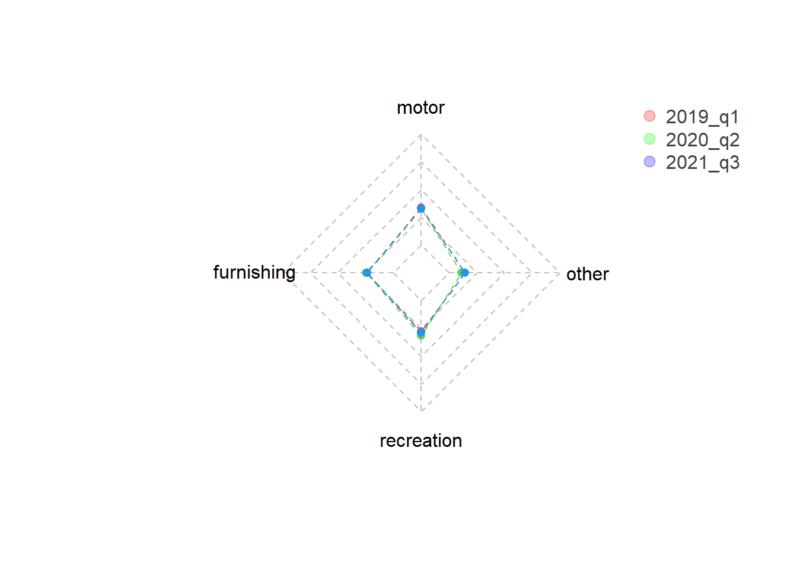
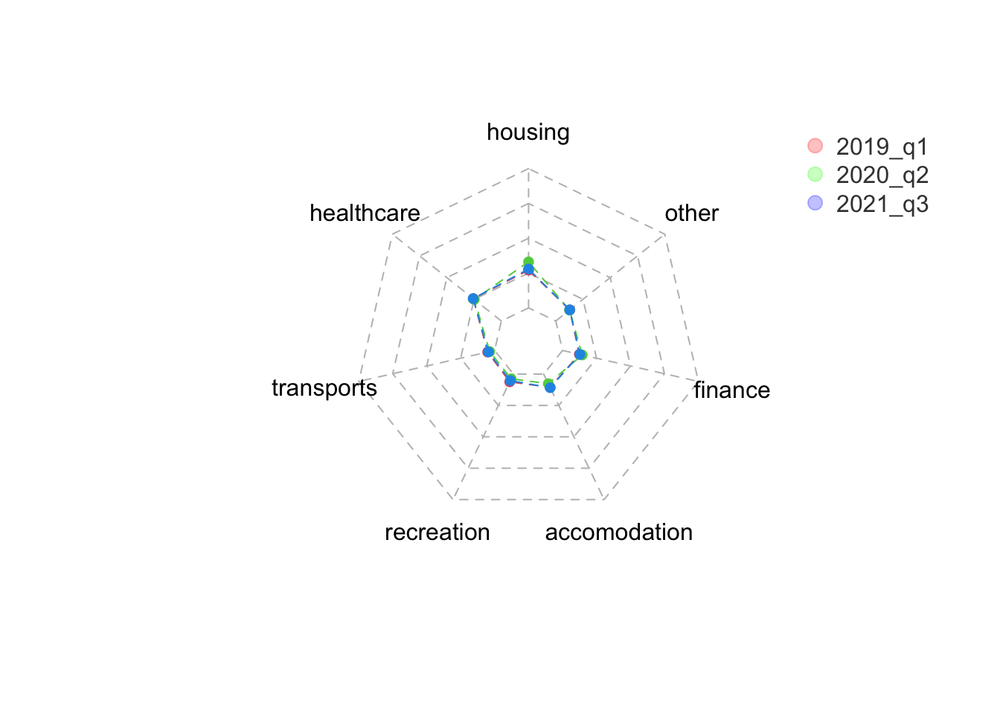

Consumer Behaviors in Pandemic
This page is about trend in personal consumption in the US
Import data
consumption_product = readxl::read_excel("data/consumption_product.xlsx") %>%
janitor::clean_names() %>%
pivot_longer(
x2019_q1 : x2021_q3,
names_to = "time",
names_prefix = "x",
values_to = "consumption"
)
consumption_function = readxl::read_excel("./data/consumption_function.xlsx") %>%
janitor::clean_names() %>%
filter(as.numeric(line) <= 28) %>%
pivot_longer(
x2019_q1 : x2021_q3,
names_to = "time",
names_prefix = "x",
values_to = "consumption"
) %>%
mutate(functions = recode(functions, `Household consumption expenditures (for services)` = "household",
`Final consumption expenditures of nonprofit institutions serving households (NPISHs)1` = "nonprofit consumption"))
general_1 = consumption_function %>%
filter(functions %in% c("Goods","Services"))
covid_seasonal = read_csv("covid_seasonal.csv") %>%
rename(time = date) %>%
select(time, quarterly)
consumption_seasonal = general_1 %>%
select(-line)
covid_consumption = left_join(consumption_seasonal, covid_seasonal, by = "time")
name = colnames(consumption_function)
col = ncol(consumption_function)
row = (nrow(consumption_function) / 11) - 7Data description The Consumption Function data frame contains the amount of consumption of goods with different functions. There are line, functions, time, consumption in total 4 coloumns in this data frame, and 21 kinds of different functions in total.
Data cleaning To clean the Consumption Function, we first used ‘janitor::clean_names()’ to get a uniform naming scheme. From there, we deleted unneeded rows (whose row numbers are greater than 28, since these rows are not showing the function of the goods), made a time variable that sorted the years and the quarter. We renamed Household consumption expenditures (for services) to household, and renamed Final consumption expenditures of nonprofit institutions serving households (NPISHs)1 to nonprofit consumption, since the original names are too long.
Consumption and Covid
joint_plot = plot_ly(covid_consumption, x = ~time) %>%
add_trace(y = ~consumption, type = "scatter", mode = "lines", color = ~functions, yaixs = "y") %>%
add_trace(y = ~quarterly, type = "bar", name = "Covid Cases", yaxis = "y2", opacity = 0.6, marker = list(color = 'rgb(158,202,225)')) %>%
layout(title = "Consumption of Goods and Services Compared with Covid Cases",
yaxis=list(title = "consumption expenditure", side="left"),
yaxis2=list(title = "covid cases", side="right", overlaying="y"),
showlegend=TRUE)
joint_plotThe lowest point actually did not happen as expected at the peak of the pandemic. In the second quarter of 2020, when cases start to rise, personal protective equipment were in a shortage, no effective treatment plans/vaccines are available, the total expenditure of consumption in the US reached to its lowest.
Consumption expenditures of services experienced a steeper change than expenditures of goods due to the shutdown of businesses, the quarantine and the lock down policies etc.
Even though cases keep rising, as restrictions keep lifting, the rate of vaccination keep rising, economics keep recovering, people’s consumption expenditure grows steadly after the third quarter of 2020. Although the severity of Covid 19 reached to the first peak in the fourth quarter of 2020, it has limited effect on people’s consumption behavior.
The total consumption expenditure is even larger by now comparing with that before the pandemic. This can be partially explained by inflation and government’s stimulus plan.
Consumption of Goods
general_2 = consumption_function %>%
filter(functions %in% c("Durable goods","Nondurable goods","household","nonprofit consumption")) %>%
select(-line) %>%
pivot_wider(names_from = functions, values_from = consumption) %>%
janitor::clean_names()
subfig_1 = plot_ly(general_2, x = ~time, y = ~durable_goods, type = "bar", name = "Durable Goods", marker = list(color = 'rgb(49,130,189)')) %>%
add_trace(y = ~nondurable_goods, name = "Nondurable Goods", marker = list(color = 'rgb(204,204,204)')) %>%
layout(title = "Decomposition of Consumption of Goods",
yaxis = list(title = "Consumption"), barmode = "stack",
legend = list(orientation = 'h', x = 0, y = -0.2))
subfig_1The proportion of the nondurable goods such as food, drinks and clothing etc. increased after the second quarter of 2020, the time when the cases are rising. People are more willing to spend income on the nonduarble goods instead of spending them on buying the durable goods such as cars and house.
This might result from the work-from-home policy which many companies are still keeping even after the outbreak of COVID-19. For example, people need to prepare food for themselves since many of the restaurants are no longer serving, and they don’t need to drive that much so many of them don’t buy the new cars as frequent as they used to.
There is a lowest point of the value of consumption expenditure in all kind of goods consumption in the second quarter of 2020, when the COVID-19 outbroke, and after that, the consumption gradually grow up. From the lowest point we can infer that people were influenced a lot because of the pandemic, many of them might have lost their job in this period, so they don’t have enough money to consume as what they did before.
Durable Goods
durable_goods =
consumption_function %>%
filter(functions %in% c("Motor vehicles and parts","Furnishings and durable household equipment","Recreational goods and vehicles","Other durable goods"))
durable_goods %>%
plot_ly(x = ~time, y = ~consumption, type = 'scatter', mode = 'lines', yaxis="y", color = ~functions) %>%
layout(title = "Decomposition of Consumption in Durable Goods",
legend = list(orientation = 'h', x = 0, y = -0.2))Motor vehicles and parts increases fastest after experiencing the bottom point, from which we can infer that people go out even more frequently after the pandemic than before the pandemic. Let’s call it revenge travel: people become more willing to get out of the room after being trapped at home for a long time due to the pandemic.
Recrational goods and vehicles(includes video/audio equipments and sporting equipments) keep increasing during the pandemic because people are spending more time at home instead of socializing. Thus people are changing their ways of having fun, which leads to more consumption for products like televisions, video games and some recreational vehicles.
Furnishngs and durable household equipment consumption value barely reduced in the pandemic, and there is a growth after the second quarter of 2020. That’s probably because people’s demand on durable goods like this does not change significantly due to the pandemic, on the contrary, staying at home increases people’s willingness to buy furniture.
Other durable goods includes jewelry and watches, therapeutic appliances, educational books, luggages, and telephones and related. Like most of other kinds of products, the value of expenditure experienced a lowest point at the second quarter of 2020 and recovered after that.
Nondurable Goods
The proportion of consumption expenditure on food/beverages and other nondurable goods exceeds a lot than that of clothing/footware and energy goods. Unlike the changes in consumption of clothing/footware and energy goods, that in food/beverages and other nondurable goods is not experiencing reduction in the pandemic but increases steadly.
nondurable_goods =
consumption_function %>%
filter(functions %in% c("Food and beverages purchased for off-premises consumption","Clothing and footwear","Gasoline and other energy goods","Other nondurable goods"))
nondurable_goods %>%
plot_ly(x = ~time, y = ~consumption, type = 'scatter', mode = 'lines', yaxis="y", color = ~functions) %>%
layout(title = "Decompostion of Consumption in Nondurable Goods",
legend = list(orientation = 'h', x = 0, y = -0.2))Clothing and foodwear consumption reduces rapidly in the pandemic because people began to work from home, and didn’t need to go outside to meet other people. So they could just stay in their own room wearing the slippers and pajamas, didn’t need to buy that much new clothes and shoes.
Similar to changes in motor vehicles, the consumption expenditure in Gasoline and other energy goods experienced significant decline in the second quarter of 2020 due to reductions in transportation. Consumption in energy goods by the end of 2021 has already surpassed that in 2019 probably due to increase in gasoline prices in the United States.
There is a small peak in the second quarter in 2020 in the consumption of food and beverages. We can infer that people spent more time at home and reduced the frequency of dining outside. Thus leading to more spending on buying food and beverages.
Othe nondurable goods includes medical products, recreational items, household supplies, personal care products, tobacco, and magazines/newspapers. Similar to that of food and beverages, the total consumption of this category keep increasing and exceeds the value before the pandemic.
Consumption of Services
The consumption of services is calculated with two categories: household consumption expenditures for services, and final consumption expenditures of nonprofit institutions serving households (nonprofit consumption). We can see the consumption value of nonprofit institutions remain steady comparing with household services from 2019 till now.
Since we are focusing on consumer behavior analysis in our project, we only analyze the part of household consumption expenditures of services.
subfig_2 = plot_ly(general_2, x = ~time, y = ~household, type = "bar", name = "Household", marker = list(color = 'rgb(49,130,189)')) %>%
add_trace(y = ~nonprofit_consumption, name = "Nonprofit Consumption", marker = list(color = 'rgb(204,204,204)')) %>%
layout(title = "Decomposition of Consumption in Services ",
yaixs = list(title = "Consumption"), barmode = "stack",
legend = list(orientation = 'h', x = 0, y = -0.2))
subfig_2Household Services
Except for housing and utilities and finantial service and insurance, the consumption expenditure of all kinds of household services experienced a sharp decline in the second quarter of 2020.
household_consumption =
consumption_function %>%
filter(functions %in% c("Housing and utilities","Health care","Transportation services","Recreation services","Food services and accommodations","Financial services and insurance","Other services"))
household_consumption %>%
plot_ly(x = ~time, y = ~consumption, type = 'scatter', mode = 'lines', yaxis="y", color = ~functions) %>%
layout(title = "Decomposition of Consumption in Household Services",
legend = list(orientation = 'h', x = 0, y = -0.2))Consumption of Health care reduced significantly in the second quarter of 2020 because the hospital didn’t have enough ability to take in other patients due to increasing cases of Covid. Also, most people stayed at home, which made them less likely to get illness such as cold.
Transpotation service includes motor vehicle services and public transportation. Due to changes in mode of working/education and reduction of services in public transportation, these fee reduced rapidly in the pandemic. The total consumption of transportation hasn’t recovered to the level before the pandemic by the third quarter of 2021.
Food service and accommodations reduced because most of the restaurants were shut down in the pandemic. And people were not encouraged to eat outside for healthcare reasons. By the third quarter of 2021, the value in this category reached to a new highest level due to increase in price and the recovery of dining services.
Recreation service mainly consists of the fees of the activities for fun such as sport, museum, gambling, package tour etc. Most of these activities need to be completed outdoor, which were limited during the pandemic, thus the value of consumption reduced significantly in the second quarter of 2020.
Only the housing and utilities(which mainly includes housing rental and the fees for the resources at home such as electricity and gas) and financial service and insurance (which mainly includes life and health insurance and commissions in banks) were not reduced in the pandemic and even increased because people spend most of their time at home, and was impossible to use less life basic resource. Also, most of the service in the banks can be completed online now, so paying for the insurance and the commission was not influenced a lot in the pandemic.
Consumption Structure Analysis
This part visualizes the the percentage of consumption of different categories of products in durable goods, nondurable goods, and services.
By the comparison between first quarter in 2019, second quarter in 2020, third quarter in 2021, there is no significant changes observed in proportion of different categories of consumption.
areas <- c(rgb(1, 0, 0, 0.25),
rgb(0, 1, 0, 0.25),
rgb(0, 0, 1, 0.25))
percent <- function(x) {
if(is.numeric(x)){
ifelse(is.na(x), x, paste0(round(x*100L, 2), "%"))
} else x
}
durable_goods_radar = durable_goods %>%
filter(time %in% c("2019_q1", "2020_q2", "2021_q3")) %>%
select(functions, time, consumption) %>%
pivot_wider(names_from = functions, values_from = consumption)
total = rep(1,5)
start = rep(0,5)
durable_goods_radar = rbind(total, start, durable_goods_radar)[,-1]
rownames(durable_goods_radar) = c("1", "2", "2019_q1", "2020_q2","2021_q3")
colnames(durable_goods_radar) = c("motor", "furnishing", "recreation", "other")
durable_goods_radar[3,] = durable_goods_radar[3,]/1473292
durable_goods_radar[4,] = durable_goods_radar[4,]/1468253
durable_goods_radar[5,] = durable_goods_radar[5,]/1984391
durable_goods_radar[-c(1,2),] %>%
set_rownames(.,c("2019_q1", "2020_q2","2021_q3")) %>%
mutate_each(funs(percent)) %>%
knitr::kable()| motor | furnishing | recreation | other | |
|---|---|---|---|---|
| 2019_q1 | 33.94% | 23.88% | 27.61% | 14.57% |
| 2020_q2 | 33.05% | 24.6% | 31.19% | 11.16% |
| 2021_q3 | 33.04% | 23.66% | 28.9% | 14.4% |
radar_1 = radarchart(durable_goods_radar,
cglty = 2, cglcol = "gray", pcol = 2:4, plwd = 1, plty = 2)
legend("topright",
legend = c("2019_q1", "2020_q2","2021_q3"),
bty = "n", col = areas, pch = 20,
text.col = "grey25", pt.cex = 2)
nondurable_goods_radar = nondurable_goods %>%
filter(time %in% c("2019_q1", "2020_q2", "2021_q3")) %>%
select(functions, time, consumption) %>%
pivot_wider(names_from = functions, values_from = consumption)
nondurable_goods_radar = rbind(total, start, nondurable_goods_radar)[,-1]
rownames(nondurable_goods_radar) = c("1", "2", "2019_q1", "2020_q2", "2021_q3")
colnames(nondurable_goods_radar) = c("food/beverage", "clothing", "energy", "other")
nondurable_goods_radar[3,] = nondurable_goods_radar[3,]/2909515
nondurable_goods_radar[4,] = nondurable_goods_radar[4,]/2881659
nondurable_goods_radar[5,] = nondurable_goods_radar[5,]/3509766
nondurable_goods_radar[-c(1,2),] %>%
set_rownames(.,c("2019_q1", "2020_q2","2021_q3")) %>%
mutate_each(funs(percent)) %>%
knitr::kable()| food/beverage | clothing | energy | other | |
|---|---|---|---|---|
| 2019_q1 | 34.83% | 13.52% | 11.13% | 40.52% |
| 2020_q2 | 39.98% | 10.19% | 6.54% | 43.29% |
| 2021_q3 | 35.51% | 13.68% | 10.78% | 40.03% |
radar_2 = radarchart(nondurable_goods_radar,
cglty = 2, cglcol = "gray", pcol = 2:4, plwd = 1, plty = 2)
legend("topright",
legend = c("2019_q1", "2020_q2","2021_q3"),
bty = "n", col = areas, pch = 20,
text.col = "grey25", pt.cex = 2)
household_consumption_radar = household_consumption %>%
filter(time %in% c("2019_q1", "2020_q2","2021_q3")) %>%
select(functions, time, consumption) %>%
pivot_wider(names_from = functions, values_from = consumption)
total = rep(1,8)
start = rep(0,8)
household_consumption_radar = rbind(total, start, household_consumption_radar)[,-1]
rownames(household_consumption_radar) = c("1", "2", "2019_q1", "2020_q2","2021_q3")
colnames(household_consumption_radar) = c("housing", "healthcare", "transports", "recreation", "accomodation", "finance", "other")
household_consumption_radar[3,] = household_consumption_radar[3,]/9336650
household_consumption_radar[4,] = household_consumption_radar[4,]/8062770
household_consumption_radar[5,] = household_consumption_radar[5,]/9984527
household_consumption_radar[-c(1,2),] %>%
set_rownames(.,c("2019_q1", "2020_q2","2021_q3")) %>%
mutate_each(funs(percent)) %>%
knitr::kable()| housing | healthcare | transports | recreation | accomodation | finance | other | |
|---|---|---|---|---|---|---|---|
| 2019_q1 | 27.15% | 25.8% | 5.14% | 6.14% | 10.57% | 12.38% | 12.82% |
| 2020_q2 | 33.09% | 24.81% | 3.61% | 3.77% | 7.65% | 14.5% | 12.58% |
| 2021_q3 | 27.93% | 25.84% | 4.62% | 5.16% | 10.84% | 12.79% | 12.82% |
radar_3 = radarchart(household_consumption_radar,
cglty = 2, cglcol = "gray", pcol = 2:4, plwd = 1, plty = 2)
legend("topright",
legend = c("2019_q1", "2020_q2","2021_q3"),
bty = "n", col = areas, pch = 20,
text.col = "grey25", pt.cex = 2)